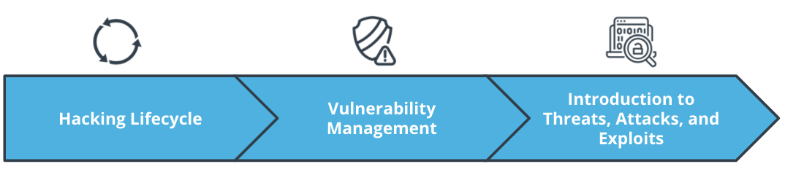

Thinking like a hacker
Hacking is not bad rather encouraged. Hacking helps to better securing our technologies.
With the help of hacking, we can use a sample computing system to assess,
- High Level Risks
- Vulnerabilities
- Attack Vectors
What is hacking according to the hacker lexicon?

As a hacker we must do the following -
- Categorize assets, risks, threats, Vulnerabilities and exploits
- Identify different types of vulnerabilities in a system
- Identify the categories of a cyber threat
- Determine the phase of a cyber attack
- Recognize common exploits